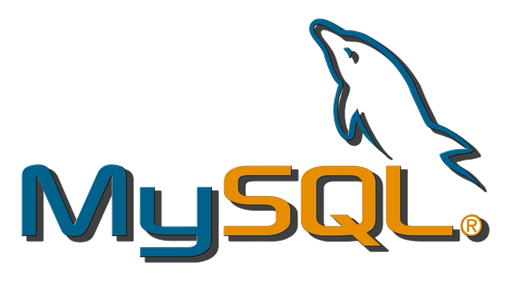
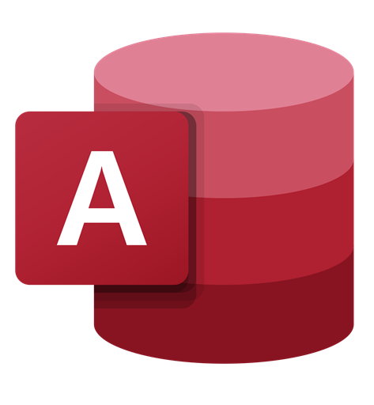
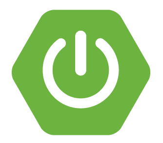
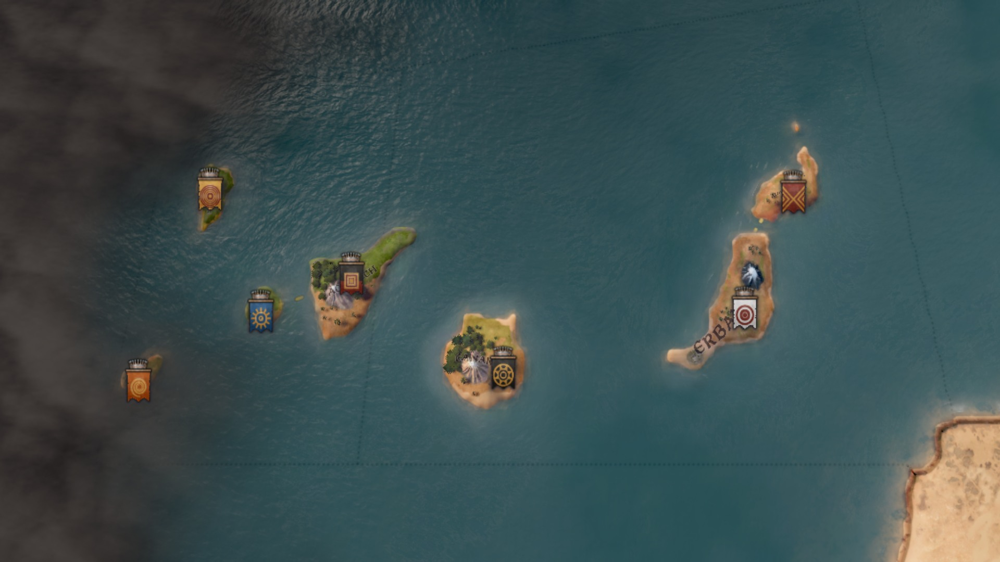
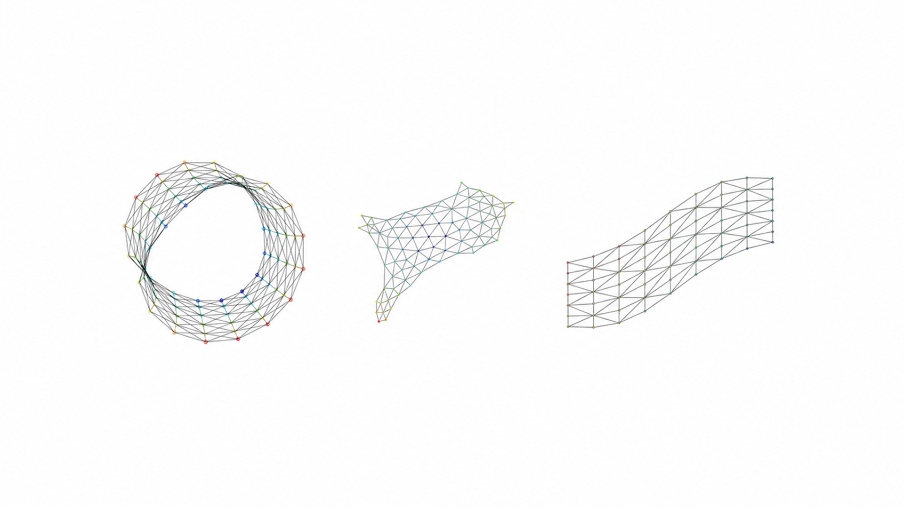
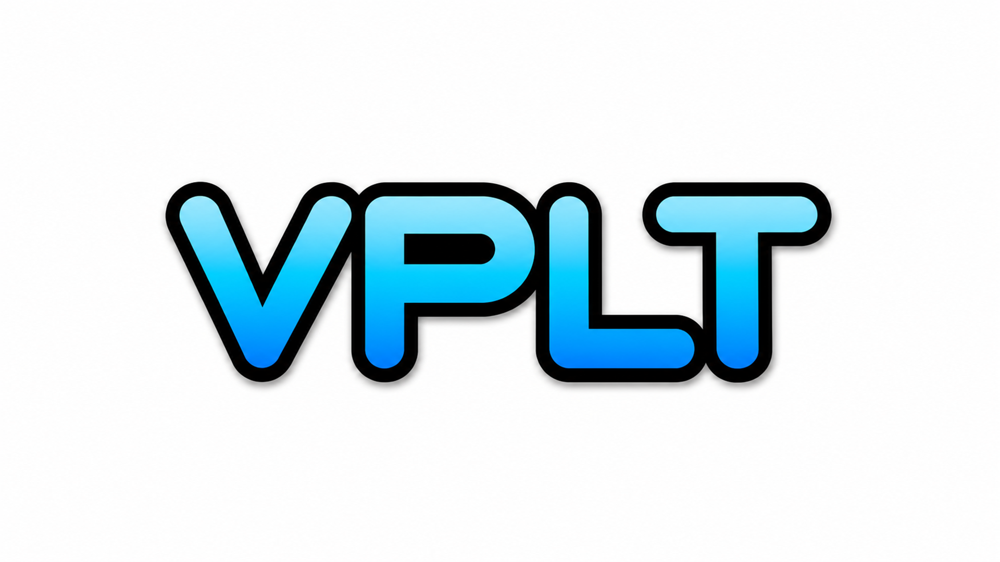

About me 💻🎮
Hello, world! 👋
My name is David, and I have always been passionate about programming. I completed my Computer Engineering degree at the University of Las Palmas de Gran Canaria in 2022, and in 2025 I went on to finish my Master’s degree at the University of Limerick.
Over the years, I have gained knowledge and experience in developing software products using programming languages such as Java, C++, C#, JavaScript and Python. The projects I have worked on adhere to Clean Code principles, utilise architectural models like MVC, as well as design patterns such as Command and Observer.
Highlights 📌
Netviz Web
Web migration and refactoring of a network visualisation application using React, TypeScript and Three.js.
View detailsVPL Lexical Analysis Engine
Configurable lexical analysis engine based on JSON rules, developed as a final degree project.
View detailsTechnical Staff in Research Project
Instituto Universitario IATEXT · Full-time contract
Jul 2025 – present Las Palmas de Gran Canaria, Canary Islands, Spain- Development of desktop applications, web, and WCF services in the field of Digital Humanities.
- Updating and maintaining applications that have already been developed at IATEXT and CLARIAH-ES.
- Assisting in managing computer systems to meet the requirements of existing servers.
Skills: ASP.NET MVC, C#, PL/SQL, MySQL, Microsoft Access, Azure DevOps Server, DockerComputer Technician
Cabildo de Gran Canaria · Internship contract
Jan 2023 – Jan 2024 (1 year, 1 month) Las Palmas de Gran Canaria, Canary Islands, Spain- Development and maintenance of an expedient manager.
- Technical assistance in the field of Computer Engineering.
- Meetings with the Cabildo and with other external companies contracted.
- Drafting of technical specifications.
Skills: Git, Java, Python, Teamwork, Communication, BashWeb Developer
INERZA S.A. · Apprenticeship contract
Sep 2021 – Dec 2021 (4 months) Las Palmas de Gran Canaria, Canary Islands, SpainTesting, implementation and support of computer web applications for the Ministry of Education, Universities, Culture and Sports of the Government of the Canary Islands.Skills: JavaScript, C#, PL/SQL, ASP.NET MVC, Scrum
Master of Science in Software Engineering
University of Limerick
2024 - 2025- Stream: Software Process and Analysis
- Class: First Class Honours
Computer Engineering Degree
University of Las Palmas de Gran Canaria
2018 - 2022- Specialism: Computation
- Average grade: 8.08
Science and Technology Bachelor's Degree
IES Siete Palmas
2016 - 2018
Programming Languages
Java
AdvancedC#
AdvancedPython
AdvancedPHP
Intermediate
JavaScript
IntermediateDatabase Management

MySQL
AdvancedSQLite
Intermediate
Access
IntermediateDevelopment Frameworks

ASP.NET MVC
AdvancedReact
Intermediate
Spring Boot
Familiar
Argivo - Declarative Command-Line Framework for Bash
May 2026 – presentSkills: Bash, GNU/Linux, CLI, Argument Parsing, Shell ScriptingArgivo is a declarative command-line framework that turns Bash functions into documented commands through a simple annotation-based syntax. It provides function-based commands, declarative metadata, a built-in standard library and automatic help generation without requiring additional argument-parsing code.
Canarias Flavor Pack
Dec 2025 – presentSkills: CK3, YAMLCanarias Flavor Pack is a mod for CK3 focused on the historical and cultural representation of the indigenous peoples and their traditions in the Canary Islands. An effort has been made to represent the islands as faithfully as possible, based on historical sources or plausible assumptions.
Migrating and Refactoring a Network Visualisation Application
Feb 2025 – Aug 2025 (6 months)Skills: React, TypeScript, Three.js, WebGL, Graph Algorithms, Network Visualisation, Software RefactoringThe main objective of this project is to enhance the quality of NetvizGL through two complementary approaches. On the one hand, the project aims to migrate the application from a desktop-based architecture to a web-based platform. On the other hand, it intends to apply systematic refactoring techniques to the new codebase to improve its overall maintainability, extensibility, and usability.Expedia - Expedient Manager
Jan 2023 – Jan 2024 (1 year, 1 month)Skills: Teamwork, Git, Test-Driven Development (TDD), Gherkin, Behavior-Driven Development (BDD), Communication, Maven, Bash, JavaExpedia is a desktop application designed for the efficient management of general entry records and expedients processed by the Industry and Commerce Service of the Cabildo de Gran Canaria. The main objective of this project is to facilitate Service workers to monitor the status and evolution of each of the processed records, optimizing certain repetitive tasks and reducing possible human errors.
Design and Implementation of a Generic Lexical Analysis Engine of source code for VPL
Jun 2022 – Dec 2022 (8 months)Skills: PHP, Moodle, GNU/Linux, Behat, PHPUnit, Docker, Git, Visual Studio Code, SphinxLexical analysis engine for VPL that improves the lexical processing with the lexical definition of the programming languages from external JSON files called rules files. This final degree project greatly facilitates the incorporation of programming languages for the lexical analysis performed in the early phases of the VPL similarity search. Besides, it is an adaptation of the current Ace source code editor tokenizer.Personal Portfolio
Jan 2023 – presentSkills: HTML, CSS, JavaScript, Bootstrap, jQueryThis portfolio shows my professional trajectory in the Computer Engineer field.DotFiles Configuration for GNU/Linux Systems
Oct 2020 – Jan 2023 (2 years, 3 months)Skills: GNU/Linux, Bash, ZSH, Shell Scripting, Automation, Package Management, Visual Studio CodeThis project includes a set of configuration files I use for machines with Linux distributions installed. There are .files for Bash, ZSH, Hyper, and Visual Studio Code, among others.
Advanced English (C1)
Cambridge University Press & Assessment (2024)First Certificate in English (B2)
Cambridge University Press & Assessment (2023)The Ultimate Guide to Game Development with Unity (Official)
Udemy (2023)Complete ASP.NET MVC Development Course
Udemy (2023)Higher University Course of Digital Promoter
Las Palmas University Foundation (2022)Press Start: How to enter the game industry
University of Las Palmas de Gran Canaria (2022)